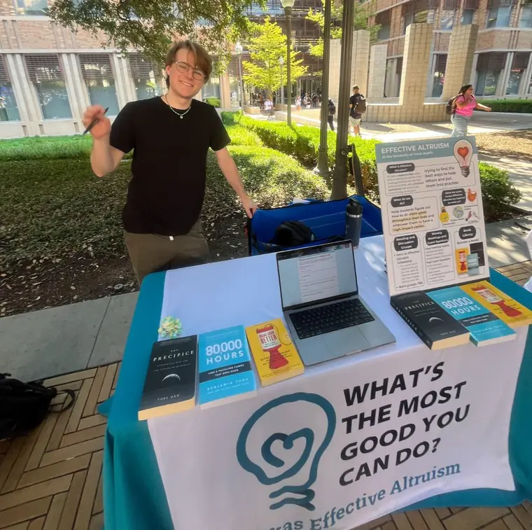
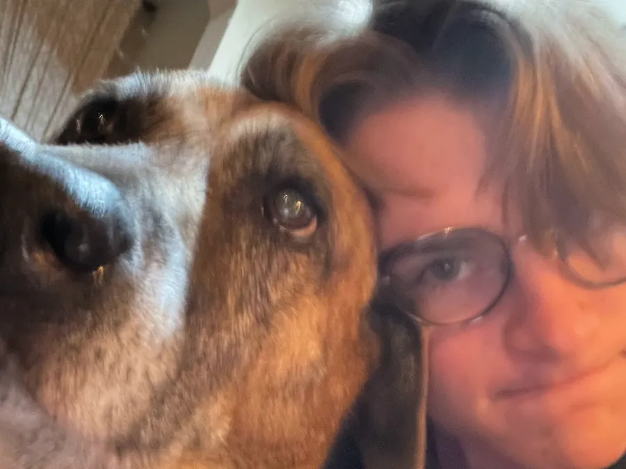

Hi, I'm Rob.
I work at 80,000 Hours, where I help people find roles to make the world safer from the serious and urgent risks of advanced AI.
There's a lot to do! Check out the 80k job board.
AI Safety:
I work in AI safety fieldbuilding, because I truly believe that the stakes for AI are existential. I think it is still an underappreciated fact that:
- AI companies do not know how to stop their current AI models from going rogue (see: the Hugging Face incident)
- AI companies are spending hundreds of billions of dollars to make those same models more capable. They are attempting to automate AI research (recursive self improvement) and are praying that somewhere along the way they will figure out how to stop the models from going rogue.
I think this is very uncool of them. If it is possible to make AI systems that are smarter than humans in every way, we should not create them unless there is broad scientific consensus they will be safe.
Here are some of my favorite resources on AI Safety:
- This might be the worst AI warning we get. by AI In Context
- Unfortunately, We Can’t Just Unplug It by Nate Soares
- Why AI risks are the world’s most pressing problems from 80,000 Hours
Effective Altruism:

I'm quite involved in the Effective Altruism community. I co-organized UT Austin's Effective Altruism group for two years and I briefly worked for NEST (The Network for EA Support and Training).
For me the central question of Effective Altruism is: How can we impartially do the most good with the resources we've got? Because that decision matters for those we help. Sometimes by a factor of 100!
Here are some of my favorite resources about Effective Altruism:
- What I get out of effective altruism by Andy Masley
- Charity for Shrimps? Ronny Chieng on The Daily Show
- Introduction to Effective Altruism from effectivealtruism.org
Animals:

I like animals and I think animal cruelty is bad, including inhumane practices on factory farms. This is why I'm vegan and why I believe modern animal farming is a moral catastrophe. Billions of chickens live in cages smaller than a sheet of paper (if you're viewing this on a laptop, that's roughly the size of your screen).
Here are some of my favorite resources about factory farming:
- How to End Factory Farming, a TED talk by Lewis Bollard
- Factory farming problem profile from 80,000 Hours
- Two Martians Crawl Into a Bar by Silas Abrahamsen
Ways to Get Into Contact With Me:
I have a pretty low bar for reaching out. I'm not Jeff Bezos and I like to help people with what I can.
- Email: robdpaine@icloud.com
- Book a 1:1 with me on Calendly!
- LinkedIn: robertdpaine
- Instagram: @robpaine4
- Letterboxd: @robpaine4 (see what I've watched recently)